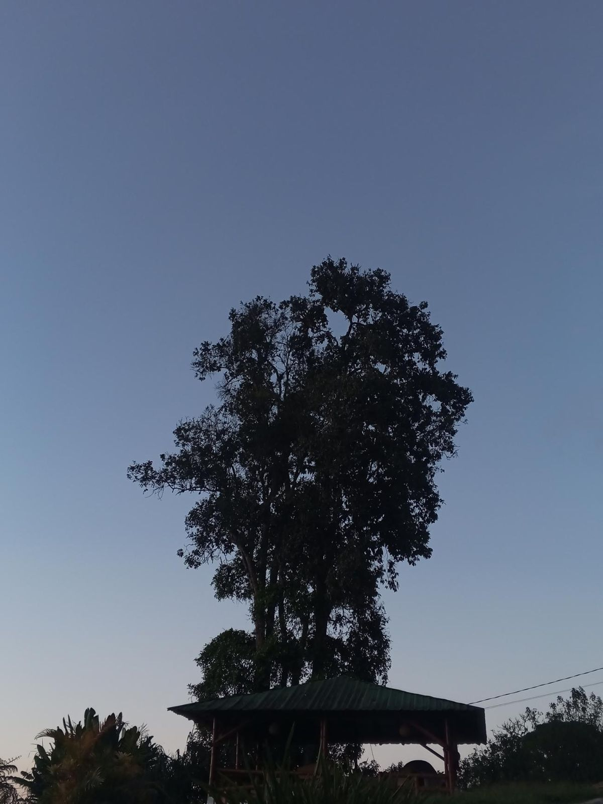

Objetivos
Corto plazo 1–2 años
- Iniciar y avanzar en la universidad manteniendo el equilibrio con el deporte.
- Conseguir un ingreso propio (trabajo o actividades formales) que me permita empezar a ahorrar con un propósito claro.
- Mantener una práctica deportiva constante, aunque sea con menos volumen, y seguir creciendo como fotógrafo amateur.
- Cuidar mis relaciones más cercanas y construir hábitos de reflexión y autocuidado.
Mediano plazo 3–6 años
- Lograr una cierta estabilidad económica básica y mental.
- Adquirir mi primera moto con recursos propios: un símbolo de autonomía y de que el esfuerzo da frutos.
- Tener más claridad sobre mi camino profesional y seguir vinculado al deporte de la forma que me permita la vida universitaria y laboral.
- Explorar más la fotografía y convertirla en un hábito que enriquezca mi mirada del mundo.
Largo plazo 7+ años
- Vivir en un lugar propio a las afueras de Cali o en Dagua, rodeado de naturaleza, con espacio personal amplio pero sin estar aislado de lo importante.
- Alcanzar una estabilidad plena: económica, emocional y de estilo de vida.
- Conservar a mis amigos cercanos y seguir abriendo espacio a nuevas personas significativas.
- Tener la libertad real de salir cuando quiera, fotografiar, caminar y sentir que la vida que construí es la que realmente quiero vivir.
Acciones concretas
- Priorizar el estudio y el trabajo sin abandonar el deporte: buscar horarios realistas y formas de entrenar aunque sea con menor intensidad.
- Abrir una cuenta de ahorros específica orientada a la moto y, más adelante, a la vivienda.
- Practicar la fotografía de forma consciente: salir a buscar composiciones, documentar momentos cotidianos y paisajes.
- Cultivar la reflexión introspectiva: revisar mis reacciones, reconocer lo que sí puedo controlar y no dejar que lo innecesario me agobie demasiado tiempo.
- Mantener el contacto con mis amigos más cercanos y estar abierto a nuevas amistades.
- Cuidar mi salud física y mental como base de todo lo demás.